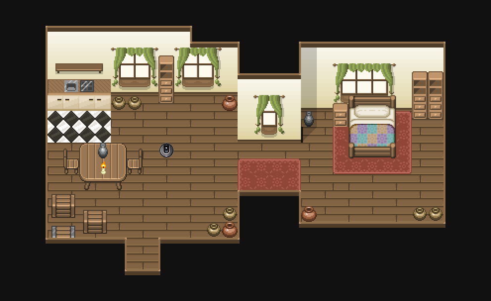

<!-- You must include this JavaScript file -->
<script src="https://assets.crowd.aws/crowd-html-elements.js"></script>
<script src="https://cdnjs.cloudflare.com/ajax/libs/mustache.js/3.0.1/mustache.js" integrity="sha256-eWzD4VoILNfodzTHdCIMKX/k47LcM3hmpTfFhAR7Cj0=" crossorigin="anonymous"></script>
<script src="https://cdn.plyr.io/3.6.2/plyr.js"></script>
<script src="//cdn.jsdelivr.net/npm/phaser@3.24.1/dist/phaser.js"></script>
<link rel="stylesheet" href="https://cdn.plyr.io/3.6.2/plyr.css" />

<!-- Seedable version of Math.random -->
<script src="https://cdnjs.cloudflare.com/ajax/libs/seedrandom/3.0.1/seedrandom.min.js" integrity="sha256-qWhoVRXiPqipUCqo3Tl0NGx/o56OREtG1aaxJIOCSNs=" crossorigin="anonymous"></script>


<script>
    function submitPage(evt) {
        evt.preventDefault();
        next();
        return false;
    }

</script>

<style>
    #task crowd-input {
        margin-top: -16px;
        margin-bottom: 16px;
    }

    #controls > * {
        display: inline-block;
    }
    .original-command {
        transition: .5s;
        color: black
    }

    .original-command.hidden {
        color: white;
    }
    .original-command.hidden .highlight {
        color: #222;
    }
    p, crowd-input{
        max-width: 700px;
    }

    /* form */
    crowd-radio-group {
        display: block;
        margin-bottom: 18px;
    }
    crowd-radio-group > span {
        display: inline-block;
        width: 100px;
        padding: 0;
        font-weight: bold;
    }
    crowd-radio-group > span:first-of-type {
        text-align: left;
    }
    crowd-radio-group > input {
        margin: 0;
        padding: 0;
    }
    crowd-radio-group > input:nth-of-type(6) {
        border-left: 1px solid gray;
    }
    input[type=radio] {
        width: 100px;
        height: 24px;
    }

    crowd-radio-group > label {
        padding: 0;
        margin-right: 12px;
        display: none;
    }

    .labels {
        height: 60px;
    }
    .labels > div {
        display: inline-block;
        //transform: rotate(-45deg);
        position: absolute;
        width: 100px;
        text-align: center;
    }

    .labels  div.l1 {
        left: 105px;
    }
    .labels div.l3 {
        left: 310px;
    }
    .labels  div.l5 {
        left: 515px;
    }
    .labels  div.l6 {
        left: 630px;
    }


    /* video player */
.plyr {
        width:800px;
        height: 450px;
        --plyr-color-main: white;
    }


    .plyr__control--overlaid {
        background: rgba(127,127,127, .8);
    }

</style>

<template id="attribution">
    <div class="page attribution">
        <h2>Robot {{ robotNumber }}</h2>
        <div class="video-container">
            <video controls disablePictureInPicture src="https://mturk.nickwalker.us/attribution/batch/3/{{ trajectoryId }}.webm" class="{{unwatched}}"></video>
            <div class="video-controls">
                <input type="button" value="Restart" class="restart" name="restart"/>
            </div>
        </div>
        <div class="questions">
        <h3>What three words would you use to describe robot {{robotNumber}}'s motion?</h3>
        <crowd-input {{required}} name="con_{{ condition }}_describe"></crowd-input>

        <p>Rate your agreement with the statement for each word:</p>
            <h3>"The robot is..."</h3>
        <div class="scales">
        <div class="labels">
            <div class="l1">Strongly disagree</div> <div class="l3">Neither agree nor disagree </div><div class="l5">Strongly agree</div> <div class="l6">I don't know</div>
        </div>
        <div class="question-randomization-region">
            <crowd-radio-group class="b1">
                <span>Brave</span>
                <input {{required}} type="radio" name="con_{{ condition }}_b1" value="yes1"><label>1</label>
                <input {{required}} type="radio" name="con_{{ condition }}_b1" value="yes2"><label>2</label>
                <input {{required}} type="radio" name="con_{{ condition }}_b1" value="yes3"><label>3</label>
                <input {{required}} type="radio" name="con_{{ condition }}_b1" value="yes4"><label>4</label>
                <input {{required}} type="radio" name="con_{{ condition }}_b1" value="yes5"><label>5</label>
                <input {{required}} type="radio" name="con_{{ condition }}_b1" value="yes6"><label>N/A</label>
            </crowd-radio-group>
            <crowd-radio-group class="b2">
                <span>Broken</span>
                <input {{required}} type="radio" name="con_{{ condition }}_b2" value="yes1"><label>1</label>
                <input {{required}} type="radio" name="con_{{ condition }}_b2" value="yes2"><label>2</label>
                <input {{required}} type="radio" name="con_{{ condition }}_b2" value="yes3"><label>3</label>
                <input {{required}} type="radio" name="con_{{ condition }}_b2" value="yes4"><label>4</label>
                <input {{required}} type="radio" name="con_{{ condition }}_b2" value="yes5"><label>5</label>
                <input {{required}} type="radio" name="con_{{ condition }}_b2" value="yes6"><label>N/A</label>
            </crowd-radio-group>
            <crowd-radio-group class="b3">
                <span>Clumsy</span>
                <input {{required}} type="radio" name="con_{{ condition }}_b3" value="yes1"><label>1</label>
                <input {{required}} type="radio" name="con_{{ condition }}_b3" value="yes2"><label>2</label>
                <input {{required}} type="radio" name="con_{{ condition }}_b3" value="yes3"><label>3</label>
                <input {{required}} type="radio" name="con_{{ condition }}_b3" value="yes4"><label>4</label>
                <input {{required}} type="radio" name="con_{{ condition }}_b3" value="yes5"><label>5</label>
                <input {{required}} type="radio" name="con_{{ condition }}_b3" value="yes6"><label>N/A</label>
            </crowd-radio-group>
            <crowd-radio-group class="b4">
                <span>Curious</span>
                <input {{required}} type="radio" name="con_{{ condition }}_b4" value="yes1"><label>1</label>
                <input {{required}} type="radio" name="con_{{ condition }}_b4" value="yes2"><label>2</label>
                <input {{required}} type="radio" name="con_{{ condition }}_b4" value="yes3"><label>3</label>
                <input {{required}} type="radio" name="con_{{ condition }}_b4" value="yes4"><label>4</label>
                <input {{required}} type="radio" name="con_{{ condition }}_b4" value="yes5"><label>5</label>
                <input {{required}} type="radio" name="con_{{ condition }}_b4" value="yes6"><label>N/A</label>
            </crowd-radio-group>
            <crowd-radio-group class="b5">
                <span>Efficient</span>
                <input {{required}} type="radio" name="con_{{ condition }}_b5" value="yes1"><label>1</label>
                <input {{required}} type="radio" name="con_{{ condition }}_b5" value="yes2"><label>2</label>
                <input {{required}} type="radio" name="con_{{ condition }}_b5" value="yes3"><label>3</label>
                <input {{required}} type="radio" name="con_{{ condition }}_b5" value="yes4"><label>4</label>
                <input {{required}} type="radio" name="con_{{ condition }}_b5" value="yes5"><label>5</label>
                <input {{required}} type="radio" name="con_{{ condition }}_b5" value="yes6"><label>N/A</label>
            </crowd-radio-group>
            <crowd-radio-group class="b6">
                <span>Energetic</span>
                <input {{required}} type="radio" name="con_{{ condition }}_b6" value="yes1"><label>1</label>
                <input {{required}} type="radio" name="con_{{ condition }}_b6" value="yes2"><label>2</label>
                <input {{required}} type="radio" name="con_{{ condition }}_b6" value="yes3"><label>3</label>
                <input {{required}} type="radio" name="con_{{ condition }}_b6" value="yes4"><label>4</label>
                <input {{required}} type="radio" name="con_{{ condition }}_b6" value="yes5"><label>5</label>
                <input {{required}} type="radio" name="con_{{ condition }}_b6" value="yes6"><label>N/A</label>
            </crowd-radio-group>
            <crowd-radio-group class="b7">
                <span>Intelligent</span>
                <input {{required}} type="radio" name="con_{{ condition }}_b7" value="yes1"><label>1</label>
                <input {{required}} type="radio" name="con_{{ condition }}_b7" value="yes2"><label>2</label>
                <input {{required}} type="radio" name="con_{{ condition }}_b7" value="yes3"><label>3</label>
                <input {{required}} type="radio" name="con_{{ condition }}_b7" value="yes4"><label>4</label>
                <input {{required}} type="radio" name="con_{{ condition }}_b7" value="yes5"><label>5</label>
                <input {{required}} type="radio" name="con_{{ condition }}_b7" value="yes6"><label>N/A</label>
            </crowd-radio-group>
            <crowd-radio-group class="b8">
                <span>Lazy</span>
                <input {{required}} type="radio" name="con_{{ condition }}_b8" value="yes1"><label>1</label>
                <input {{required}} type="radio" name="con_{{ condition }}_b8" value="yes2"><label>2</label>
                <input {{required}} type="radio" name="con_{{ condition }}_b8" value="yes3"><label>3</label>
                <input {{required}} type="radio" name="con_{{ condition }}_b8" value="yes4"><label>4</label>
                <input {{required}} type="radio" name="con_{{ condition }}_b8" value="yes5"><label>5</label>
                <input {{required}} type="radio" name="con_{{ condition }}_b8" value="yes6"><label>N/A</label>
            </crowd-radio-group>
            <crowd-radio-group class="b9">
                <span>Reliable</span>
                <input {{required}} type="radio" name="con_{{ condition }}_b9" value="yes1"><label>1</label>
                <input {{required}} type="radio" name="con_{{ condition }}_b9" value="yes2"><label>2</label>
                <input {{required}} type="radio" name="con_{{ condition }}_b9" value="yes3"><label>3</label>
                <input {{required}} type="radio" name="con_{{ condition }}_b9" value="yes4"><label>4</label>
                <input {{required}} type="radio" name="con_{{ condition }}_b9" value="yes5"><label>5</label>
                <input {{required}} type="radio" name="con_{{ condition }}_b9" value="yes6"><label>N/A</label>
            </crowd-radio-group>
            <crowd-radio-group class="b10">
                <span>Scared</span>
                <input {{required}} type="radio" name="con_{{ condition }}_b10" value="yes1"><label>1</label>
                <input {{required}} type="radio" name="con_{{ condition }}_b10" value="yes2"><label>2</label>
                <input {{required}} type="radio" name="con_{{ condition }}_b10" value="yes3"><label>3</label>
                <input {{required}} type="radio" name="con_{{ condition }}_b10" value="yes4"><label>4</label>
                <input {{required}} type="radio" name="con_{{ condition }}_b10" value="yes5"><label>5</label>
                <input {{required}} type="radio" name="con_{{ condition }}_b10" value="yes6"><label>N/A</label>
            </crowd-radio-group>

        </div>
        </div>


        <h3>Please briefly explain the factors that contributed to your strongest rating:</h3>
        <crowd-input {{required}} name="con_{{condition}}_explain"></crowd-input>
        </div>
    </div>
</template>

<template id="demonstration">
    <div class="attribution">
        <h2>Robot {{robotNumber}}: {{attribution}}</h2>
        <gridworld-interactive map-name="house_goal" id="demo{{condition}}"></gridworld-interactive>


        <h3>Please briefly explain how you made the robot seem {{attribution}}:</h3>
        <crowd-input {{required}} name="con_{{condition}}_explain"></crowd-input>
    </div>
        <hr/>

</template>


<!-- You must include crowd-form so that your task submits answers to MTurk -->
<crowd-form answer-format="flatten-objects">

    <div id="task">

        <div class="page welcome">
            <h1>Welcome</h1>

            <p>This HIT has 2 parts; the first involves controlling a robot to clean a bedroom in a game, and the second involves watching and rating several videos of robots cleaning a bedroom.</p>
            
            
            <p>
                At the end, we'll ask your age and gender. Note that before we accept your work, we'll check for indications that you didn't follow instructions</p>
            <p>The whole task should take 20 minutes. You <b>can</b> complete this HIT multiple times.
                This HIT is designed to be compatible with recent version of desktop Chrome and Firefox. <b>It does not support mobile devices or Safari</b>.</p>

            <p>The next pages describe this research and the data collected in more detail.</p>
        </div>

        <div class="page qualification">
            <h2>Qualification</h2>
            <p>Are you an employee of the University of Washington, family member of a UW employee, or UW student involved in this particular research? </p>
            <crowd-radio-group id="qualification">
                <crowd-radio-button name="qualification1" value="yes">I am</crowd-radio-button>
                <crowd-radio-button name="qualification2" value="no">I am not</crowd-radio-button>
            </crowd-radio-group>
        </div>

        <div class="page irb">
            <h3>UNIVERSITY OF WASHINGTON<br />
                CONSENT FORM<br />
                ONLINE SURVEY - PERCEPTIONS OF A ROBOT</h3>

            <h3>Researchers' statement</h3>
            <p>We are asking you to be in a research study. The purpose of this consent form is to give you the information you will need to help you decide whether to be in the study or not. Please read the form carefully. You may ask questions about the purpose of the research, what we would ask you to do, the possible risks and benefits, your rights as a volunteer, and anything else about the research or this form that is not clear. When we have answered all your questions, you can decide if you want to be in the study or not. This process is called "informed consent."</p>

            <h3>PURPOSE OF THE STUDY</h3>
            <p>This project aims to better understand how people perceive task-oriented robots. We are evaluating how different behaviors impact the perception of a robot.</p>

            <h3>STUDY PROCEDURES</h3>
            <p>In this study, you will be asked to watch clips and organize them into groups. After you have grouped them, you'll be asked to describe the groups. At the end, you will be asked to answer additional questions about the clips you saw. The study will take about 15 minutes total.</p>

            <h3>RISKS, STRESS, OR DISCOMFORT</h3>
            <p>This study does not present any risks that are greater than those of daily activities that involve using a personal computer or laptop. </p>
            <h3>BENEFITS OF THE STUDY</h3>
            <p>This research will inform the design of intelligent robots. You will not individually benefit from participation in the study.</p>

            <h3>SOURCE OF FUNDING</h3>
            <p>The study team and/or the University of Washington is receiving financial support from Honda Research Institute.</p>

            <h3>OTHER INFORMATION</h3>
            <p>You may refuse to participate and you are free to withdraw from this study at any time without penalty or loss of benefits to which you are otherwise entitled.</p>

            <h3>CONFIDENTIALITY OF RESEARCH INFORMATION</h3>
            <p>All of the information you provide will be confidential. There will be no association between your name and the answers you provide. The recordings will be analyzed by our research team to assess the effectiveness of the different behaviors used by the robot. Sample videos or snapshots from these recordings may be used in scientific articles or talks.</p>
        </div>

        <div class="page">
            <h2>Part 1: Controlling the Robot</h2>
            <p>In this part, we'll tell you a style (like "curious" or "efficient") and ask you to make the robot clean the bedroom in that style. This can be tricky, but try to think of what you can make the robot do that would make someone watching say that it's behaving in the given style. You'll repeat this for a total of 3 styles. Here's the interface you'll use for controlling the robot:</p>

            <gridworld-interactive id="instructional" map-name="house_goal"></gridworld-interactive>

            <ul>
                <li><b>Click on the interface</b> to enable the controls. Click elsewhere on the page to disable them.</li>
                <li>Use the <b>arrow keys</b> to move the robot up, down, right, or left</li>
                <li>Press the <b>spacebar if you want the robot to stop</b> in a location</li>
                <li>The green trail drawn behind the robot is to help you remember the robot's motion</li>
                <li>The blue-shaded squares are the bedroom area</li>
                <li>If you make a mistake and want to restart, press the reset button
                </li>
            </ul>

        </div>


        <div class="page" id="demonstration-insertion-region">

        </div>
        <div class="page">
            <h2>Part 2: Rating robots</h2>
            <p>In this part you'll look at videos showing a robot vacuum cleaner that's been asked to clean the bedroom. We'll ask you to rate each robot on several scales. You'll repeat this for a total of 3 videos. Each video will look something like this example:</p>

            <div class="video-container">
                <video controls disablePictureInPicture src="https://mturk.nickwalker.us/attribution/batch/1/example.webm" class="{{unwatched}}"></video>
                <div class="video-controls">
                    <input type="button" value="Restart" class="restart" name="restart"/>
                </div>
            </div>
            
            
            <ul>
                <li>The green trail drawn behind the robot is to help you remember the robot's motion</li>
                <li>Once the video has played once, you can scrub through the video again or restart it if you need to watch it again</li>
                <li>The robot can only move in cardinal directions (up, down, right, left)
                </li>
                <li>The robot can also pause in place</li>
                <li> It's okay if you don't know how to rate a certain question; mark it "I don't know"
                </li></ul>
 
        </div>

        <div id="attribution-insertion-region">

        </div>
        <div class="page demographics">
            <h2>Demographics</h2>
            <crowd-input autovalidate required name="age" placeholder="Age" type="number"></crowd-input>
            <crowd-input autovalidate required name="gender" placeholder="Gender"></crowd-input>

        </div>

        <div class="page thanks">
            <p>Thank you for doing our HIT!</p>
            <p><strong>Comment (optional):</strong>
                <crowd-input name="comment"
                             placeholder="Let us know any comments or feedback you have on this HIT"></crowd-input>
            </p>
            <p><b>Note: The submit button won't work unless you've filled out every required input!</b></p>

            <p>You <b>can</b> complete this HIT multiple times.</p>
            <crowd-button form-action="submit" variant="primary">Submit</crowd-button>
        </div>

    </div>

    <div id="controls">
        <input onclick="back()" type="button" value="Back" name="noop"/>
        <p id="page-number">1</p>
        <input onclick="submitPage(event)" type="button" value="Next" name="noop1"/>
    </div>
</crowd-form>

<script>
    window.trajectoryIds = [0, 1, 2 ,3, 4, 5]
    //window.trajectoryIds = [${id0}, ${id1}, ${id2}, ${id3}, ${id4}, ${id5}]
    window.attributions = ["curious", "brave", "efficient"]
    //window.trajectoryIds = [${attr0}, ${attr1}, ${attr2}]
</script>

<script src="dist/vendors.bundle.js" type="module"></script>
<script src="dist/batch.bundle.js" type="module"></script>